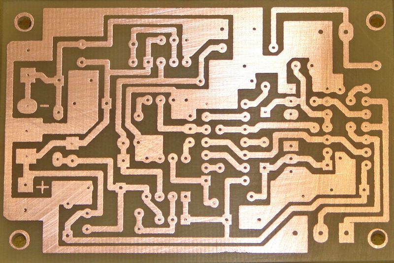
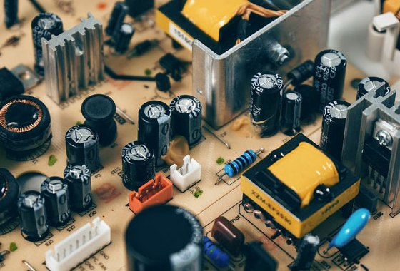
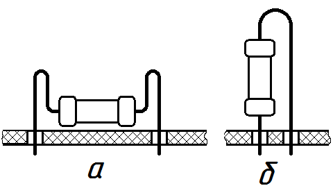
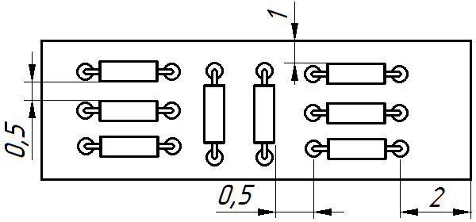
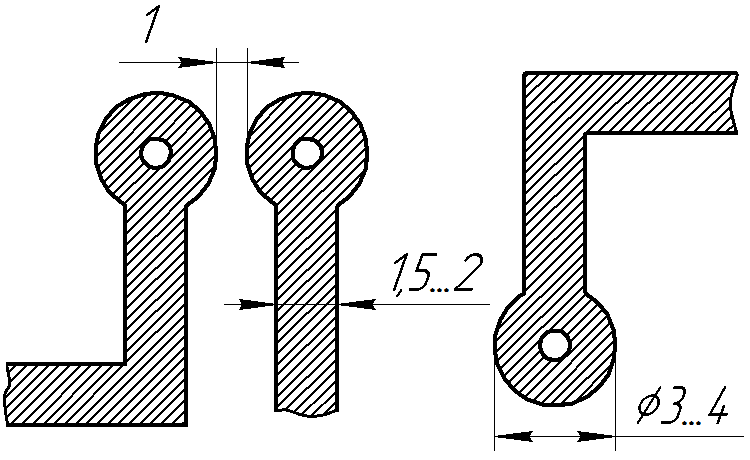
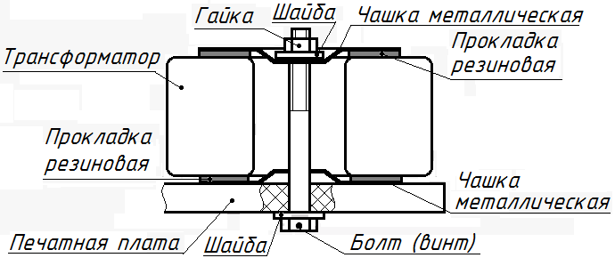
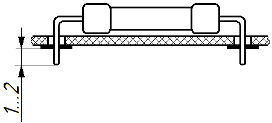
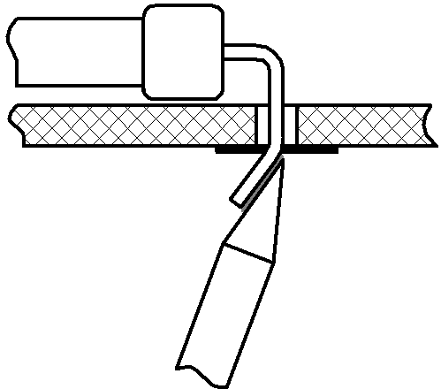

Печатный монтаж
При печатном монтаже соединение между элементами схемы осуществляется с помощью печатных проводников, т.е. дорожек из тонкой медной фольги, наклеенной на поверхность пластины из гетинакса или стеклотекстолита. Выводы элементов пропускают через монтажные отверстия в плате и припаивают к печатным проводникам, при этом навесные элементы располагаются с одной стороны платы, а печатные проводники — с другой.


Электронные компоненты обычно располагают параллельно поверхности платы (рис. 3,а). Для увеличения плотности монтажа применяют вертикальную установку (рис. 3,б), однако следует иметь в виду, что в этом случае детали должны иметь достаточно жесткие выводы.

Корпуса навесных элементов при выполнении радиомонтажных работ должны располагаться параллельно или перпендикулярно друг к другу и краям платы (рис. 4). При этом расстояние между корпусом элемента и краем печатной платы должно быть не менее 1 мм, а между выводом элемента и краем платы – не менее 2 мм. Расстояние между корпусами соседних элементов следует выбирать с учетом теплового режима и взаимного влияния элементов, но не менее 0,5 мм. Расстояние между выводами элементов должно удовлетворять условиям электрической прочности изолирующих промежутков и его выбирают в зависимости от разности потенциалов между выводами.

а) - горизонтальная, б) - вертикальная
Ширина печатных проводников должна быть не менее 1,5-2 мм, а расстояние между соседними проводниками — не менее 1 мм (рис. 5). Контактные площадки — участки, окружающие монтажные отверстия и предназначенные для присоединения выводов навесных элементов, делают более широкими (3-4 мм) для того, чтобы во время пайки не происходило отслаивание медной фольги. При этом на каждой контактной площадке допускается крепление вывода только одного навесного элемента при радиомонтажных работах.

Шины питания обычно располагают вдоль краев печатной платы, их делают более широкими по сравнению с другими проводниками.
Если при компоновке платы не удается избежать пересечения печатных проводников, то в месте пересечения следует разорвать проводник и сделать две контактные площадки, которые впоследствии соединяют проволочной перемычкой, впаянной со стороны навесного монтажа.
Корпуса массивных деталей (подстроечных резисторов, конденсаторов, трансформаторов, реле и т.п.) необходимо механически закрепить на плате с помощью хомутов, скоб или держателей. Для повышения механической прочности конструкции такие детали следует располагать недалеко от точек крепления платы к шасси. Расположение подстроечных элементов должно обеспечивать свободный доступ к ним при регулировке устройства.

На печатной плате следует предусмотреть выводы для соединения с другими платами и внешними деталями (силовым трансформатором, входными и выходными клеммами, переключателями и т.п.). Для этой цели используют разъемы или контактные опоры (шпильки, лепестки), впаянные в монтажные отверстия.
При установке компонент на печатную плату их выводы залуживают, пропускают через монтажные отверстия. Выступающая над контактной площадкой часть выводов должна иметь длину 1-2 мм (рис. 7).

Чтобы элементы не выпадали при пайке, их выводы подгибают к контактным площадкам (рис. 8). Длина подогнутого отрезка вывода должна быть такой, чтобы он не выходил за пределы контактной площадки, остальную часть вывода обрезают. Выводы диаметром более 0,8 мм не подгибают. Положение корпуса детали должно быть таким, чтобы выводы, подпаянные к контактным площадкам, не отрывали их от платы при нажатии на корпус.

Распайку навесных элементов можно проводить по мере их установки в монтажные отверстия или сразу установить все электронные компоненты, закрепив их путем подгиба концов.
При монтаже печатных плат обычно пользуются паяльником мощностью не более 40 Вт и припоями с температурой плавления 130-180×С. Пайка проводится кратковременным (2-3 с) прикосновением жала паяльника к контактной площадке и концу вывода (рис. 8). Припой должен равномерно заполнить зазоры между выводом и контактной площадкой и закрыть монтажное отверстие. Нельзя допускать проникновения припоя на обратную сторону платы, затекания под корпуса электронных компонент, отслаивания печатных проводников, образования иглообразных выступов припоя и перемычек между соседними проводниками. После окончания пайки с поверхности платы удаляют остатки флюса и окончательно проверяют качество и надежность монтажа.